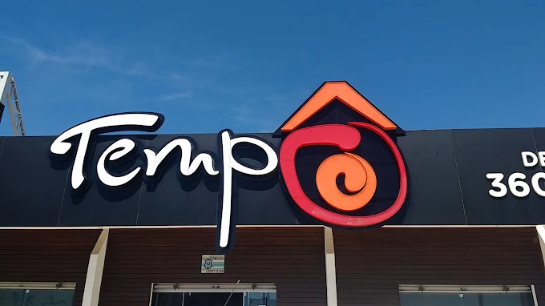
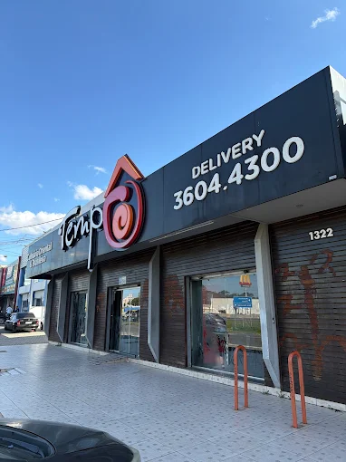
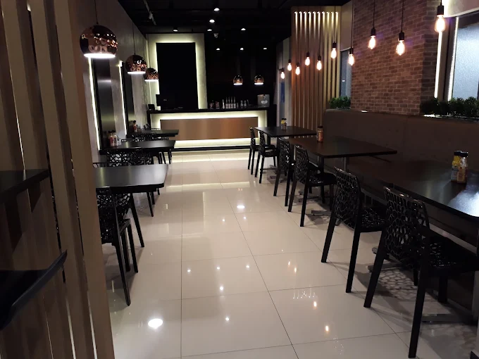
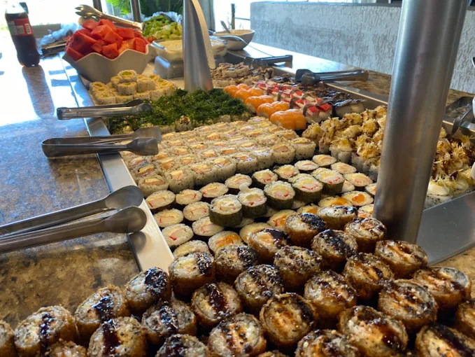
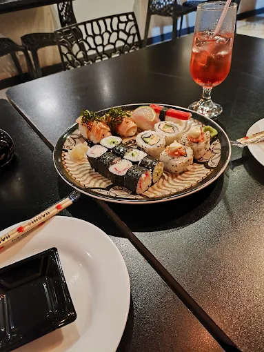
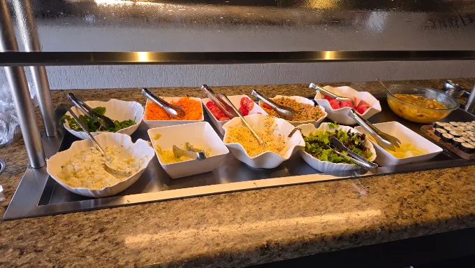

Restaurante japonês · Fazenda Rio Grande/PR
Buffet japonês e brasileiro no almoço, em Fazenda Rio Grande
Sushi, sashimi e ceviche na mesma mesa que o yakisoba e o prato quente. Buffet variado, preço de almoço do dia a dia — e um dos melhores custo-benefício da região.
4,6 no Google · 1.867 avaliações
Ticket médio R$ 20–40 por pessoa

Japonês e brasileiro juntos
Quem não come sushi não fica de fora do almoço. Tem prato quente também.
Custo-benefício
Buffet completo por preço de almoço comum. É o elogio que mais se repete.
Nota 4,6 no Google
A avaliação mais alta entre os restaurantes da região.
O que servimos
Buffet de almoço com a cozinha japonesa completa de um lado e a comida brasileira do outro — você monta o prato como quiser.
-
Sushi, sashimi e ceviche
Frios e hots, rolinhos, peixes e camarão, repostos durante todo o almoço.
-
Pratos quentes e yakisoba
A parte brasileira do buffet, pra quem quer comida quente no prato.
-
Saladas e sobremesas
Buffet de salada com frutas e opções doces pra fechar.
Salão, retirada na porta e delivery.
O ambiente
Ficamos na Av. Carlos Eduardo Nichele, no Pioneiros. Casa simples e sem firula, focada no que importa no almoço: comida boa, buffet reposto e atendimento que trata bem quem chega — inclusive quem vem comemorar alguma coisa.
- Buffet de almoço
- Sushi e sashimi
- Ceviche
- Culinária brasileira
- Retirada na porta
- Delivery






Quem veio, contou
Nota 4,6 no Google, de 1.867 avaliações de quem já veio.
Eu já conhecia essa unidade desde quando mudei aqui pra Fazenda, mas hoje a experiência foi ainda melhor: almocei com minha esposa em comemoração à nossa data de casamento. Entrei em contato e falei com a Amanda, que prontamente me atendeu muito bem.
Lugar incrível, comida maravilhosa, o melhor sushi. Os produtos sempre de qualidade! A verdadeira comida oriental.
Custo-benefício bom pela qualidade e preparação dos pratos. Tem buffet de salada com frutas, várias opções de sushi frios e hots, ceviche, pratos quentes, pratos brasileiros, rolinhos, peixes, camarão, yakisoba e algumas opções doces. Estava tudo muito bom.
Onde estamos
Av. Carlos Eduardo Nichele, 1322 – Pioneiros, Fazenda Rio Grande/PRCEP 83833-022
Horário
Horário ainda não confirmado — ligue antes de sair de casa.